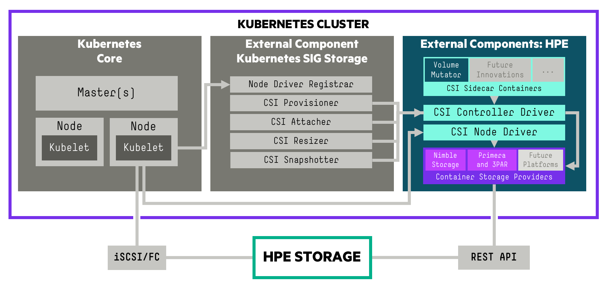

Introduction¶
A Container Storage Interface (CSI) Driver for Kubernetes. The HPE CSI Driver for Kubernetes allows you to use a Container Storage Provider (CSP) to perform data management operations on storage resources. The architecture of the CSI driver allows block storage vendors to implement a CSP that follows the specification (a browser friendly version).
The CSI driver architecture allows a complete separation of concerns between upstream Kubernetes core, SIG Storage (CSI owners), CSI driver author (HPE) and the backend CSP developer.

Tip
The HPE CSI Driver for Kubernetes is vendor agnostic. Any entity may leverage the driver and provide their own Container Storage Provider.
Table of Contents¶
Features and capabilities¶
CSI gradually mature features and capabilities in the specification at the pace of the community. HPE keep a close watch on differentiating features the primary storage family of products may be suitable for implementing in CSI and Kubernetes. HPE experiment early and often. That's why it's sometimes possible to observe a certain feature being available in the CSI driver although it hasn't been announced or isn't documented.
Below is the official table for CSI features we track and deem readily available for use after we've officially tested and validated it in the platform matrix.
| Feature | K8s maturity | Since K8s version | HPE CSI Driver |
|---|---|---|---|
| Dynamic Provisioning | GA | 1.13 | 1.0.0 |
| Raw Block Volume | GA | 1.18 | 1.2.0 |
| Volume Expansion | Beta | 1.16 | 1.1.0 |
| PVC Data Source | GA | 1.18 | 1.1.0 |
| Inline Ephemeral Volumes | Beta | 1.16 | 1.2.0 |
| Volume Snapshots | Beta | 1.17 | 1.1.0 |
| Volume Limits | GA | 1.17 | 1.2.0 |
| Volume Mutator1 | N/A | N/A | 1.3.0 |
| Generic Ephemeral Volumes | Alpha | 1.19 | 1.3.0 |
| Topology | GA | 1.17 | Future |
1 = HPE CSI Driver for Kubernetes specific feature. CSP support may vary.
Depending on the CSP, it may support a number of different snapshotting, cloning and restoring operations by taking advantage of StorageClass parameter overloading. Please see the respective CSP for additional functionality.
Refer to the official table of feature gates in the Kubernetes docs to find availability of beta and alpha features. HPE provide limited support on non-GA CSI features. Please file any issues, questions or feature requests here. You may also join our Slack community to chat with HPE folks close to this project. We hang out in #NimbleStorage, #3par-primera and #Kubernetes, sign up at slack.hpedev.io and login at hpedev.slack.com.
Tip
Familiarize yourself with the basic requirements below for running the CSI driver on your Kubernetes cluster. It's then highly recommended to continue installing the CSI driver with either a Helm chart or an Operator.
Compatibility and support¶
These are the combinations HPE has tested and can provide official support services around for each of the CSI driver releases. Each Container Storage Provider has it's own requirements in terms of storage platform OS and may have other constraints not listed here.
Note
For Kubernetes 1.12 and earlier please see legacy FlexVolume drivers.
HPE CSI Driver for Kubernetes 1.3.0¶
Release highlights:
- Kubernetes CSI Sidecar: Volume Mutator
- Broader ecosystem support
- Native iSCSI CHAP configuration
| Kubernetes | 1.15-1.181 |
|---|---|
| Worker OS | CentOS 7.6, RHEL 7.6, RHCOS 4.3-4.4, Ubuntu 18.04, Ubuntu 20.04 |
| Data protocol | Fibre Channel, iSCSI |
| Platforms |
NimbleOS 5.0.10.x, 5.1.4.200-x, 5.2.1.x, 5.3.0.x 3PAR OS 3.3.1 Primera OS 4.0.0, 4.1.0, 4.2.02 |
| Release notes | v1.3.0 on GitHub |
| Blogs |
Around The Storage Block (release) HPE DEV (Remote copy peer persistence tutorial) HPE DEV (Introducing the volume mutator) |
1 = For HPE Ezmeral Container Platform and Rancher; Kubernetes clusters must be deployed within the currently supported range of "Worker OS" platforms listed in the above table. See partner ecosystems for other variations.
2 = Only FC is supported on Primera OS prior to 4.2.0.
HPE CSI Driver for Kubernetes 1.2.0¶
Release highlights: Support for raw block volumes and inline ephemeral volumes. NFS Server Provisioner in Tech Preview (beta).
| Kubernetes | 1.14-1.18 |
|---|---|
| Worker OS | CentOS 7.6, RHEL 7.6, RHCOS 4.2-4.3, Ubuntu 16.04, Ubuntu 18.04 |
| Data protocol | Fibre Channel, iSCSI |
| Platforms |
NimbleOS 5.0.10.x, 5.1.3.1000-x, 5.1.4.200-x, 5.2.1.x 3PAR OS 3.3.1 Primera OS 4.0.0, 4.1.0 (FC only) |
| Release notes | v1.2.0 on GitHub |
| Blogs | Around The Storage Block (release) HPE DEV (tutorial for raw block and inline volumes) Around The Storage Block (NFS Server Provisioner) HPE DEV (tutorial for NFS) |
HPE CSI Driver for Kubernetes 1.1.1¶
Release highlights: Support for HPE 3PAR and Primera Container Storage Provider.
| Kubernetes | 1.13-1.17 |
|---|---|
| Worker OS | CentOS 7.6, RHEL 7.6, RHCOS 4.2-4.3, Ubuntu 16.04, Ubuntu 18.04 |
| Data protocol | Fibre Channel, iSCSI |
| Platforms |
NimbleOS 5.0.8.x, 5.1.3.x, 5.1.4.x 3PAR OS 3.3.1 Primera OS 4.0.0, 4.1.0 (FC only) |
| Release notes | N/A |
| Blogs | HPE Storage Tech Insiders (release), HPE DEV (tutorial for "primera3par" CSP) |
Release archive¶
HPE currently supports up to three minor releases of the HPE CSI Driver for Kubernetes.
Known limitations¶
- Always check with the Kubernetes vendor distribution which CSI features are available for use and supported by the vendor.
iSCSI CHAP considerations¶
If iSCSI CHAP is being used in the environment, consider the following.
CSI driver 1.2.1 and below¶
In version 1.2.1 and below, the CSI driver did not support CHAP natively. CHAP must be enabled manually on the worker nodes before deploying the CSI driver on the cluster. This also needs to be applied to new worker nodes before they join the cluster.
CSI driver 1.3.0 and above¶
CHAP is now an optional part of the initial deployment of the driver with parameters passed to Helm or the Operator. For object definitions, the CHAP_USER and CHAP_PASSWORD needs to be supplied to the csi-node-driver. The CHAP username and secret is picked up in the hpenodeinfo Custom Resource Definition (CRD). The CSP is under contract to create the user if it doesn't exist on the backend.
CHAP is a good measure to prevent unauthorized access to iSCSI targets, it does not encrypt data on the wire. CHAP secrets should be at least twelve charcters in length.
Kubernetes feature gates¶
Different features mature at different rates. Refer to the official table of feature gates in the Kubernetes docs.
The following guidelines appliy to which feature gates got introduced as alphas for the corresponding version of Kubernetes. For example, ExpandCSIVolumes got introduced in 1.14 but is still an alpha in 1.15, hence you need to enable that feature gate in 1.15 as well if you want to use it.
Kubernetes 1.13¶
--allow-privilegedflag must be set to true for the API server
Kubernetes 1.14¶
--allow-privilegedflag must be set to true for the API server--feature-gates=ExpandCSIVolumes=true,ExpandInUsePersistentVolumes=truefeature gate flags must be set to true for both the API server and kubelet for resize support
Kubernetes 1.15¶
--allow-privilegedflag must be set to true for the API server--feature-gates=ExpandCSIVolumes=true,ExpandInUsePersistentVolumes=truefeature gate flags must be set to true for both the API server and kubelet for resize support--feature-gates=CSIInlineVolume=truefeature gate flag must be set to true for both the API server and kubelet for pod inline volumes (Ephemeral Local Volumes) support--feature-gates=VolumePVCDataSource=truefeature gate flag must be set to true for both the API server and kubelet for Volume cloning support
Kubernetes 1.19¶
--feature-gates=GenericEphemeralVolume=truefeature gate flags needs to be passed to api-server, scheduler, controller-manager and kubelet to enable Generic Ephemeral Volumes